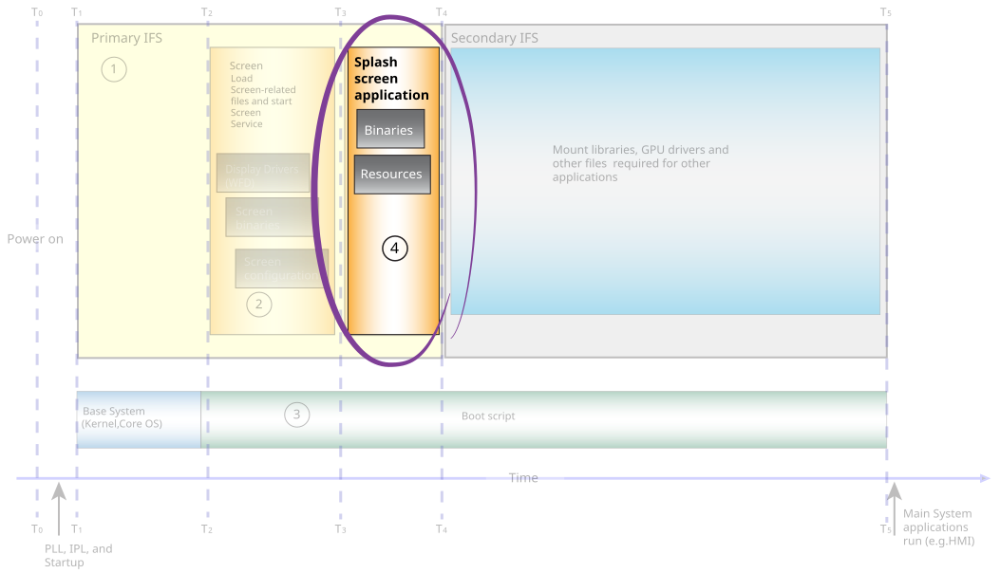

To display your content as quickly as possible, you can optimize your splash screen application,
which is the program that shows the content on the display.
Based on your system requirements, the content you
show can be a graphic (e.g., your company's logo) or even video (e.g., a live feed from a camera). If you
implement your application to use more features and capabilities for rendering your content, the more demands
you may put on Screen and the system resources. Screen
on its own is loaded quickly, but an implementation can use features that cause Screen
to start drivers or create a framebuffer, which increases the time to show the content on the display.
Note:
Optimization techniques that are described in this chapter aren't applicable to systems that
don't support graphics and displays.
Figure 1. Optimize the splash screen application.

Here are some techniques to consider when you implement your splash screen application:
- Optimize content
- There are several ways to optimize the content you show on the display. There are always trade-offs between the
compression used for the image, the file size of the image, the quality of the image, and the CPU time needed to
process the image. Here are some techniques you can use:
- If possible, include the image as part of the splash screen application binary so that it's directly
read into memory. Reading an image from file instead of memory is an additional operation you can avoid to
save time. Reading an image from memory also means that you don't have to include
libimg.so in the primary IFS to read an image. Instead, you need to statically link
only the codec in your binary to decode the image.
- Use RLE compression for image files that have multiple repeating areas in them. RLE-compressed files use
less CPU, but sometimes have larger files.
- If your content must be read from a file, ensure that the file size is optimized. The larger the file,
the more likely it can increase the size of your primary IFS.
- Another consideration is when you show an image or video, the codecs must be included in the primary IFS.
Choose an image format that uses a smaller codec. Ultimately, a larger primary IFS increases the time it
takes for your system to be loaded. For more information about optimizing the primary IFS, see
Configure a primary and a secondary IFS on the System
in this chapter.
- Prevent Screen from starting additional drivers
- Depending on what your splash screen applications does, it may cause Screen
to start device drivers, which can increase the time it takes to show content on the display.
Here are some techniques to prevent device drivers from starting:
- Prevent the creation of framebuffers
- In general, avoid creating framebuffers:
-
Optimize the usage of windows in your application to use as few Screen
features as possible. For more information, see
Optimize the usage of windows from Screen
in this chapter.
-
Use images that are the same size as the display to avoid scaling, and use window buffers
sizes that match the resolution of the display. For more information, see the
Avoid using a framebuffer
in this chapter.
- Application implementation
- Here are some general techniques to help your application run more quickly:
-
Use a single thread in your splash screen application to show the content. Use multiple
threads when you have to start additional device drivers and when you have a multicore
system, which permits you to perform operations in parallel. For example, you could
decode an image and render the image in parallel. For more information about using
multiple threads, see the Use multiple threads section
later in this chapter. For more information about developing multicore systems, see the
Multicore Processing
chapter of the QNX OS Programmer's Guide.
-
If your application uses specific libraries or files for processing or showing an image,
use statically linked libraries when possible. For example, you can statically link the
libraries required to decode your image; that way, you don't need to include it in the
primary IFS. For more information, see the Use statically linked libraries
section later in this guide.
It's important to remember that the techniques that you use often have trade-offs in terms of time savings
or impacts to your overall system. It's your responsibility to characterize your system and determine the best
techniques for optimizing it. For example, you can use PNG images for your splash screen, but the trade-off is
that you must load a codec. If you decide to use RLE compression for your images, you might save on CPU
processing time at the expense of increasing the primary IFS size.